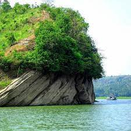
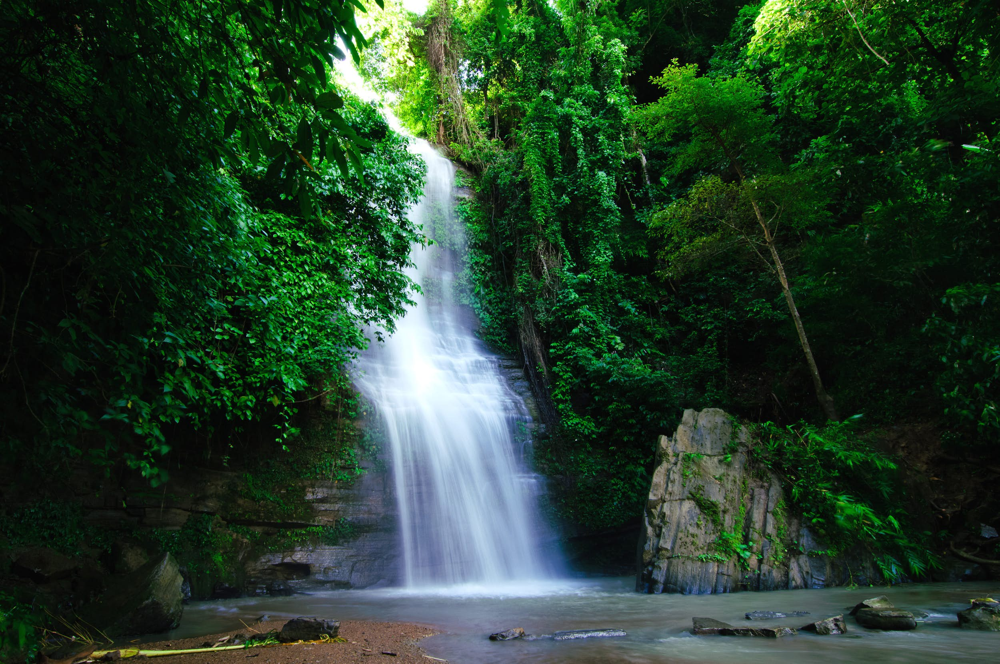

 ভ্রমণ সংক্রান্ত ১৪ই ২০২৩ ফেব্রুয়ারী
যোগাযোগের ঠিকানা
বৌদ্ধ মন্দির সড়ক,
নন্দনকানন
চট্রগ্রাম
ভ্রমণ করতে কার না ভালো লাগে।অনেক অনেক দূর ভ্রমণে যেতে আমাদের অনেকের মনের প্রবল ইচ্ছা।কিন্তু দূরের কোনো ভ্রমণ আমাদের সকলের কাছে অনেক দিনের আশা আকাঙ্ক্ষা। তাই আমরা সকলেই চাই দূরের কোনো ভ্রমণে যেতে এবং সেখানে গিয়ে আমরা আনন্দ ও সেই জায়গাটিকে উপভোগ করতে চাই।অচেনাকে চেনা ও অজানাকে জানার জন্যই তো মানুষ বেরিয়ে পড়ে আর সেই সূত্রেই ভ্রমণের অভিজ্ঞতা হয়ে ওঠে মধুর।
পার্বত্য চট্টগ্রামের বুকে প্রকৃতির অপরূপ নৈসর্গিক সৌন্দর্য নিয়ে মাথা উঁচু করে দাঁড়িয়ে আছে রাঙ্গামাটি জেলা। আর এই জেলার কাপ্তাই উপজেলা জুড়েই আছে অনন্য পাহাড়, লেকের অ থৈ জলরাশি ও চোখ জুড়ানো সবুজের সমারোহ। ১১ হাজার বর্গ কিলোমিটার পর্যন্ত বিস্তৃত এই কৃত্রিম হ্রদ উত্তরদক্ষিণ এশিয়ার মধ্যে আয়তনে সবচেয়ে বড়।

সেখানে চোখে পড়ে ছোট-বড় পাহাড়, আঁকাবাঁকা পাহাড়ি রাস্তা, ঝরনা আর পানির সঙ্গে সবুজের মিতালী। একদিকে পাহাড়ে আছে যেমন বিভিন্ন উদ্ভিদ ও প্রাণী সম্ভার, তেমনই লেকের অ থৈ জলে আছে বহু প্রজাতির মাছ ও অফুরন্ত জীববৈচিত্র্য। লেকের চারপাশের পরিবেশ, ছোট ছোট দ্বীপ, নানাবিধ পাখি ও জল কেন্দ্রিক মানুষের জীবনযাত্রা আপনাকে মুগ্ধ করবে প্রতি মূহুর্তে।